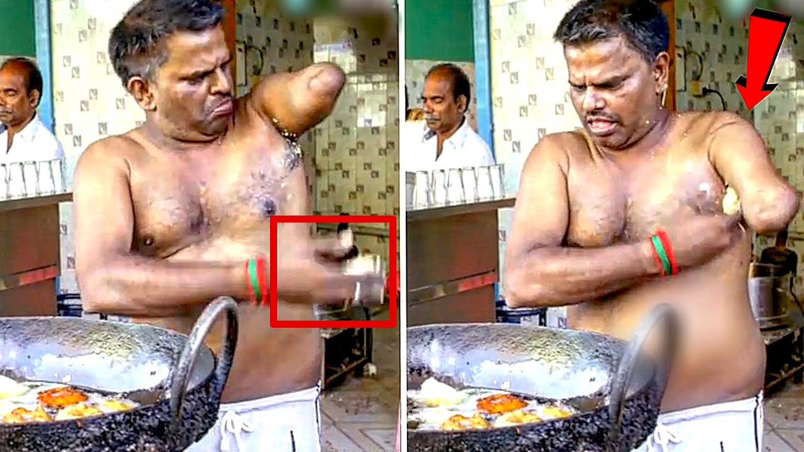

นายธนิก เลิศอำรุงกุล
| จันทร์ | เข้าแถว | แนะแนว | ภาษาไทย | พลศึกษา | วิทยาศาสตร์ | พักเที่ยง | ศาสนา | อังกฤษ | ประชุมระดับ | ศิลปะ |
|---|---|---|---|---|---|---|---|---|---|---|
| อังคาร | เข้าแถว | เหตุการณ์ปัจจุบัน | เหตุการณ์ปัจจุบัน | คอมพิวเตอร์ | คอมพิวเตอร์ | พักเที่ยง | ภาษาไทย | อังกฤษ | คณิตศาสตร์ | วิทยาศาสตร์ |
| พุธ | เข้าแถว | การผลิตสื่อสิ่งพิมพ์ | การผลิตสื่อสิ่งพิมพ์ | การผลิตสื่อสิ่งพิมพ์ | การผลิตสื่อสิ่งพิมพ์ | พักเที่ยง | โปรแกรมตารางงาน | โปรแกรมตารางงาน | โปรแกรมตารางงาน | โปรแกรมตารางงาน |
| พฤหัสบดี | เข้าแถว | การสร้างเว็บไซต์ | การสร้างเว็บไซต์ | การสร้างเว็บไซต์ | การสร้างเว็บไซต์ | พักเที่ยง | หลักการเขียนโปรแกรม | หลักการเขียนโปรแกรม | หลักการเขียนโปรแกรม | หลักการเขียนโปรแกรม |
| ศุกร์ | เข้าแถว | อังกฤษ | เศรษฐศาสตร์ | อังกฤษ | คณิตศาสตร์ | พักเที่ยง | อาชีวอนามัย | ศิลปะ | ศิลปะ | เข้าคณะสี |